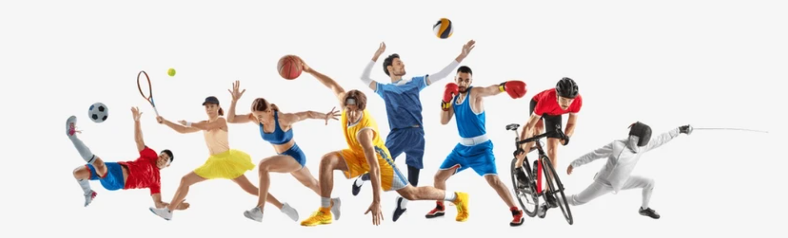

¡Todos los deportes!
Senderismo
¿Qué es el Senderismo?
Es una actividad deportiva no competitiva que consiste en caminar por senderos o rutas naturales, generalmente en áreas montañosas o boscosas. Es una forma de conectar con la naturaleza, disfrutar del aire libre y mantenerse activo.
¿Qué es el Zumba
Tiene como objetivo mantener un cuerpo saludable, desarrollar y fortalecer los músculos, y mejorar la flexibilidad. Los movimientos de baile, que incluyen elementos de la bachata, el merengue, la samba y otros estilos de baile latinoamericano, fortalecen los brazos, las piernas, los glúteos y el abdomen.
Zumba
Running
¿Qué es el Running?
Es un deporte casual que consiste en correr a un ritmo constante durante un tiempo determinado y sobre una distancia específica. También se conoce como footing, correr o jogging. Es una actividad recreativa y está asociado con el atletismo. Tiene muchos beneficios para la salud física y mental.
¿Qué son los Acuáticos?
Son actividades físicas que se desarrollan en el agua y pueden tener lugar en una variedad de entornos, como piscinas, ríos, lagos, mares y océanos. Son beneficiosos tanto para la salud física como mental. Por ejemplo, la natación genera entrenamiento aeróbico, mientras que los ejercicios realizados en tierra tonifican los músculos.